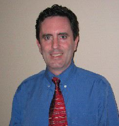
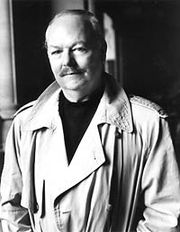
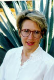
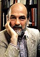
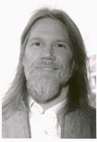
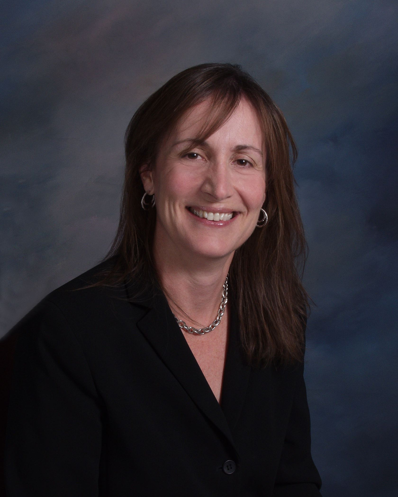
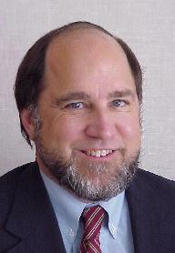
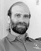
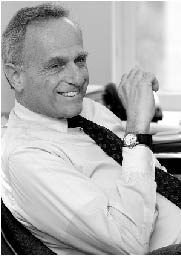

Steven Aftergood [bio]
Phil Agre [bio]
Anita Allen [bio]
John Anderson [bio]
James Bamford [bio]
Ann Bartow [bio]
Francesca Bignami [bio]
Christine Borgman [bio]
James Boyle [bio]
David Burnham [bio]
Vint Cerf [bio]
David Chaum [bio]
Julie Cohen [bio]
Simon Davies [bio]
Whitfield Diffie [bio]
David Farber [bio]
David Flaherty [bio]
Philip Friedman [bio]
Austin Hill [bio]
Deborah Hurley [bio]
Jerry Kang [bio]
Judith Krug [bio]
Chris Larsen [bio]
Gary Marx [bio]
Mary Minow [bio]
Peter Neumann [bio]
Eli Noam [bio]
Deborah Peel [bio]
Stephanie Perrin [bio]
Anita Ramasastry [bio]
Ronald L. Rivest [bio]
Pam Samuelson [bio]
Bruce Schneier [bio]
Paul Schwartz [bio]
Robert Ellis Smith [bio]
Dan Solove [bio]
Frank Turkheimer [bio]
Ed Viltz [bio]
Willis Ware [bio]
Paul Wolfson [bio]
Steven Aftergood is a senior research analyst at the Federation of American Scientists. He directs the FAS Project on Government Secrecy, which works to reduce the scope of government secrecy, to accelerate the declassification of cold war documents, and to promote reform of official secrecy practices. He writes and edits the email newsletter Secrecy News, which is read by more than 10,000 self-selected subscribers in media, government and among the general public.
Prof. Phil Agre, UCLA Department of Information Studies
Philip E. Agre is an associate professor of information studies at UCLA. He received his Ph.D. in computer science from MIT in 1989, having conducted dissertation research in the Artificial Intelligence Laboratory on computational models of improvised activities. Before arriving at UCLA he taught at the University of Sussex and UC San Diego, and has been a visiting professor at the University of Chicago and the University of Paris. He is the author of Computation and Human Experience (Cambridge University Press, 1997), and the coeditor of Technology and Privacy: The New Landscape (with Marc Rotenberg, MIT Press, 1997), Reinventing Technology, Rediscovering Community: Critical Studies in Computing as a Social Practice (with Douglas Schuler, Ablex, 1997), and Computational Theories of Interaction and Agency (with Stanley J. Rosenschein, MIT Press, 1996). His current research concerns the role of emerging information technologies in institutional change; applications include privacy policy and the networked university. He edits an Internet mailing list called the Red Rock Eater News Service that distributes useful information on the social and political aspects of networking and computing to 5000 people in 60 countries.
Prof. Anita Allen-Castellitto, University of Pennsylvania Law School
Anita Allen is one of the nation’s leading experts on privacy law. Allen is the co-author of the innovative, pathbreaking textbook, Privacy Law (West 2002), and author of Why Privacy Isn’t Everything: Feminist Reflections on Personal Accountability (2003). Her Uneasy Access: Privacy for Women in a Free Society (1988) was one of the very first books devoted to a philosophical discussion of privacy and its value. She has published more than 70 articles and essays. She is also recognized for her scholarship in the areas of jurisprudence, legal philosophy, law and literature, women’s rights and race relations.
Hon. John Anderson, World Federalist Association
The Honorable John Anderson is a former United States presidential candidate who received 6 million votes as an Independent candidate in 1980. Since his presidential candidacy, Mr. Anderson has taught political science as a visiting professor at numerous universities, including Bryn Mawr College, Brandeis University, Stanford University, Oregon State University and the University of Illinois. Currently, he is a distinguished visiting professor at Nova Southeastern Law Center in Florida. Between 1960 and 1980, Mr. Anderson served ten consecutive terms as U.S. Representative to Congress from the 16th District of Illinois. He served as States Attorney in Winnebago County, Illinois for four years.
He serves as President of the Center for Voting and Democracy, as well as President and CEO of the World Federalist Association. Mr. Anderson received an LL.M. degree from Harvard Law School in 1949, and has since been awarded honorary doctorates of law from Wheaton College and Trinity College.
James Bamford, Author and Journalist
James Bamford is an author and journalist, and one of the leading experts on the US intelligence agencies. His 1982 best seller "The Puzzle Palace" was the first book to describe the inner workings of the National Security Agency. His subsequent books "Body of Secrets" (2001) and "A Pretext for War" (2004) have received widespread acclaim. Throughout his career, Mr. Bamford has made effective use of the Freedom of Information Act. He was formerly Washington Investigative Producer for ABC's World News Tonight.
Ann Bartow, University of South Carolina School of Law
Professor Ann Bartow is a graduate of Cornell University and the University of Pennsylvania School of Law. She joined the faculty of the University of South Carolina School of Law in 2000, having previously taught at the University of Dayton School of Law and the University of Idaho School of Law. Her areas of legal specialty include Copyrights, Patents, Trademarks, and Cyberspace Law (which is sometimes also referred to as Computer or Internet Law). She is the author of a number of published articles on Intellectual Property Law and Cyberspace Law topics. She has a particular interest in gender issues, as they are effected by law generally, and specifically in relation to the emerging laws, practices and mores of the Internet.
Prof. Francesca Bignami, Duke Law School
Professor Bignami teaches European Union law, administrative law, and comparative public law. Her research focuses on problems of legitimacy and accountability in the European Union and other systems of international governance as well as the role of non-state actors in such organizations. Before coming to Duke, she was in private practice in Washington, D.C., specializing in international trade.
After receiving her A.B. magna cum laude from Harvard College and her M.Sc. from Oxford University, Professor Bignami served for one year in the European Commission in Brussels where she worked on Community research and development policy. In 1996, she graduated from Yale Law School, where she was an editor of the Yale Law Journal. She clerked for Judge Stephen F. Williams, U.S. Court of Appeals, D.C. Circuit, and then served as a stagiare for Advocate General Philippe Léger of the European Court of Justice in Luxembourg. In 1998, she was a Fulbright Scholar at the European University Institute in Florence, Italy.
Prof. Christine L. Borgman, UCLA Department of Information Studies
Prof. Christine Borgman holds a Ph.D. in Communication with a concentration in Information Science from Stanford University, a Master of Library Science with a concentration in Information Science; additional coursework in computer science and mathematics from the University of Pittsburgh, and a B.A. with honor in Mathematics with minors in Social Sciences and Education from Michigan State University. She has taught classes in Library and Information Science and Communications at schools such as UCLA, Stanford, Loughborough University in the United Kingdom, and the Budapest University of Economic Sciences. Her publications include From Gutenberg to the Global Information Infrastructure: Access to Information in the Networked World and Effective Online Searching: A Basic Text.
Prof. James Boyle, Duke Law School
James Boyle is William Neal Reynolds Professor of Law at Duke Law School and faculty co-director of the Center for the Study of the Public Domain. He is the author of Shamans, Software and Spleens: Law and the Construction of the Information Society and, more recently, of The Second Enclosure Movement. He writes widely on issues of intellectual property, internet regulation and legal theory. Professor Boyle is a founding board member of Creative Commons and a member of the academic advisory board of the Electronic Privacy Information Center, and of Public Knowledge. He won the World Technology Network Award for Law in 2003 for his work on the "intellectual ecology" of the public domain.
David Burnham, Transactional Records Access Clearinghouse
David Burnham is the co-founder and co-director of the Transactional Records Access Clearinghouse (TRAC). For the last three decades he has specialized in the critical examination of numerous government enforcement bureaucracies including the New York Police Department, the Nuclear Regulatory Commission, the Federal Bureau of Investigation, the Environmental Enforcement Agency, the Internal Revenue Service, the Food and Drug Administration and the Justice Department. A reporter with the New York Times from 1968 to 1986, Burnham has written several books and numerous magazine articles. In 1989, he became the Washington-based co-director of TRAC, a data-gathering, research and data-distribution organization associated with Syracuse University, as well as an associate research professor at the S.I. Newhouse School of Public Communications.
Vinton G. Cerf, Chairman of the Board of ICANN
Vinton G. Cerf is senior vice president of Internet Architecture and Technology for WorldCom. Cerf's team of architects and engineers design advanced networking frameworks including Internet-based solutions for delivering a combination of data, information, voice and video services for business and consumer use. Widely known as a "Father of the Internet," Cerf is the co-designer of the TCP/IP protocols and the architecture of the Internet. In December 1997, President Clinton presented the U.S. National Medal of Technology to Cerf and his partner, Robert E. Kahn, for founding and developing the Internet. During his tenure from 1976-1982 with the U.S. Department of Defense's Advanced Research Projects Agency (DARPA), Cerf played a key role leading the development of Internet and Internet-related data packet and security technologies.
Vint Cerf serves as chairman of the board of the Internet Corporation for Assigned Names and Numbers (ICANN). Cerf served as founding president of the Internet Society from 1992-1995 and in 1999 served a term as chairman of the Board. In addition, Cerf is honorary chairman of the IPv6 Forum, dedicated to raising awareness and speeding introduction of the new Internet protocol. Cerf has served as a member of the U.S. Presidential Information Technology Advisory Committee (PITAC) since 1997 and serves on several national, state and industry committees focused on cyber-security. Cerf is a principal for the Global Internet Project (GIP), and he sits on the Board of Directors for the Endowment for Excellence in Education, Folger Shakespeare Library, Gallaudet University, the WorldCom Foundation, Nuance Corporation, Avanex Corporation, CoSine Corporation, 2BNatural Corporation, B2B Video Networks and the Hynomics Corporation. Cerf is a Fellow of the IEEE, ACM, and American Association for the Advancement of Science, the American Academy of Arts and Sciences, the International Engineering Consortium, the Computer History Museum and the National Academy of Engineering.
Cerf holds a B.S. in Mathematics from Stanford University and M.S. and Ph.D. degrees in Computer Science from UCLA. He also holds honorary Doctorate degrees from the Swiss Federal Institute of Technology (ETH), Zurich; Lulea University of Technology, Sweden; University of the Balearic Islands, Palma; Capitol College, Maryland; Gettysburg College, Pennsylvania; George Mason University, Virginia; Rovira i Virgili University, Tarragona, Spain; Rensselaer Polytechnic Institute, Troy, New York; and University of Twente, Eschede, The Netherlands.
Dr. David Chaum
Widely recognized as the inventor of electronic cash and as the founding CEO of DigiCash, its pioneering company, David Chaum has also been awarded more than twenty patents and published over 50 original scientific articles on cryptography—mainly on techniques allowing individuals to protect their own privacy. A publication resulting from his Master's thesis presented the first way to secure and protect privacy of elections conducted over computer networks; his work since early 2000 has focused again on voting and he has been involved in founding companies in that space. He received his Ph.D. in Computer Science, with a minor in Business Administration, from Berkeley, and has taught at NYU Graduate School of Business Administration and at the University of California. He built a leading research group in cryptography at CWI in the Netherlands and also founded the International Association for Cryptographic Research. Currently he is also a member of the PRIME project and the Annon project.
Prof. Julie E. Cohen, Georgetown University Law Center
Professor Cohen teaches and writes about intellectual property law and data privacy law, with particular focus on computer software and digital works and on the intersection of copyright, privacy, and the First Amendment in cyberspace. She is co-author of Copyright in a Global Information Economy (Aspen Law & Business 2002), and is a member of the Advisory Boards of the Electronic Privacy Information Center and Public Knowledge. Following law school, Professor Cohen clerked for the Honorable Stephen Reinhardt of the U.S. Court of Appeals for the Ninth Circuit, and then practiced with the San Francisco firm of McCutchen, Doyle, Brown & Enersen, where she specialized in intellectual property litigation. Prior to joining the Law Center Faculty in 1999, Professor Cohen was Assistant Professor of Law at the University of Pittsburgh School of Law.
Simon Davies, Director General, Privacy International
Simon Davies is one of the world's leading figures in privacy and data
protection and has worked in more than 30 countries on issues ranging from identity cards to military surveillance. His work in privacy, data protection, consumer rights, policy analysis and technology assessment has spanned more than twenty years. Simon¹s role as founder and director of the watchdog group Privacy International has put him at the cutting edge of privacy across the full spectrum of issues. His expertise in identity and identity systems, in particular, has been called upon by many of the world's intergovernmental organisations and parliaments. The UK based Privacy International, now with members in more than 40 countries, was founded in 1990 and is a strong voice for privacy reform across the world.Davies is also the founder of the Big Brother Awards, a prize now given internationally to organizations and individuals who commit particularly flagrant violations of the right to privacy. Since 1997 Simon has been a Visiting Fellow in the Department of Information Systems of the London School of Economics. He has also been a consultant adviser to numerous government, professional and corporate bodies in Europe and North America. His publications include Privacy and Human Rights 1998: An International Survey of Privacy Laws and Developments, by David Banisar and Simon Davies (1998) and Big Brother: Britain's Web of Surveillance and the New Technological Order (Pan Books, 1997).
Dr. Whitfield Diffie, Vice President and Fellow, Chief Security Officer, Sun Microsystems
Whitfield Diffie, Chief Security Officer of Sun Microsystems, is a Sun Distinguished Engineer and has been at Sun since 1991. As Chief Security Officer, Diffie is the chief exponent of Sun's security vision and responsible for developing Sun's strategyto achieve that vision.
Best known for his 1975 discovery of the concept of public key cryptography, Diffie spent the 1990s working primarily on the public policy aspects of cryptography and has testified several times in the Senate and House of Representatives. His position—in opposition to limitations on the business and personal use of cryptography—is the subject of the book Crypto, by Steven Levy of Newsweek. Diffie and Susan Landau are joint authors of the book Privacy on the Line, which examines the politics of wiretapping and encryption and won the Donald McGannon Award for Social and Ethical Relevance in Communications Policy Research and the IEEE-USA award for Distinguished Literary Contributions Furthering Public Understanding of the Profession.
Diffie is a fellow of the Marconi Foundation and is the recipient of awards from a number of organizations, including IEEE, The Electronic Frontiers Foundation, NIST, NSA, the Franklin Institute and ACM. Prior to assuming his present position in 1991, Diffie was Manager of Secure Systems Research for Northern Telecom, where he designed the key management architecture for NT's PDSO security system for X.25 packet networks. Diffie received a Bachelor of Science degree in mathematics from the Massachusetts Institute of Technology in 1965, and was awarded a Doctorate in Technical Sciences (Honoris Causa) by the Swiss Federal Institute of Technology in 1992.
Prof. David Farber, University of Pennsylvania Department of Computer and Information Science
Prof. Farber is Distinguished Career Professor of Computer Science and Public Policy in the School of Computer Science at Carnegie Mellon University holding secondary appointments in the Heinz School of Public Policy and the Engineering Public Policy Group. He recently (2003) retired as the Alfred Fitler Moore Professor of Telecommunication Systems at the University of Pennsylvania where he also held appointments as Professor of Business and Public Policy at the Wharton School of Business and as a Faculty Associate of the Annenberg School of Communications.
In January 17, 2000, he was appointed to be Chief Technologist at the US Federal Communications Commission while on leave from UPenn for one year ending in early June 2001. While at UPenn, he co-directed The Penn Initiative on Markets, Technology and Policy. He was also Director of the Distributed Systems Laboratory (DSL) where he managed leading edge research in Ultra High Speed Networking. Research papers of the DSL are available in its electronic library.His early academic research work was focused at creating the worlds first operational Distributed Computer System (DCS) while at the ICS Department at the University of California at Irvine. After that, while with the Electrical Engineering Department of the University of Delaware, he helped conceive and organize CSNet, NSFNet and the NREN. He was a member of the Board of Trustees of the Internet Society as well as having serving 10 years on the National Research Council's Computer Science and Telecommunications Board (CSTB).
He was named in the 1997 edition of the UPSIDE's Elite 100, as one of the Visionaries of the field and was named in the 1999 Network World as one of the 25 most powerful people in Networking. In 2002 he was named by Business Week as one of the top 25 leaders in E-Commerce. His industrial experiences are extensive, just as he entered the academic world; he co-founded Caine, Farber & Gordon Inc. (CFG Inc.) which became one of the leading suppliers of software design methodology. His consulting activities include Intel, the RAND Corp among others. He is also on a number of industrial advisory and management boards.
Hon. David Flaherty, former Information and Privacy Commissioner British Columbia
David Flaherty is a specialist in the management of privacy and information policy issues. He served a six-year, non-renewable term as the first Information and Privacy Commissioner for the Province of British Columbia (1993-99). He built an office of 25 staff with an enviable record for successful mediation of access to information disputes. Flaherty wrote 320 Orders under the Freedom of Information and Protection of Privacy Act. He also pioneered the development of site visits to public bodies (hospitals in particular) as a form of auditing for compliance with fair information practices.
Flaherty began his involvement with privacy issues as an assistant to Alan F. Westin at Columbia University in 1964. Flaherty’s first book was Privacy in Colonial New England (1972). In 1974 he started comparative public policy work in Europe and North America that led to a series of books, including Protecting Privacy in Surveillance Societies: The Federal Republic of Germany, Sweden, France, Canada, and the United States (1989). His most recent articles are “Visions of Privacy: Past, Present, and Future,” in C.J. Bennett and R. Grant, eds., Visions of Privacy: Policy Choices for the Digital Age (University of Toronto Press, 1999); and “Controlling Surveillance,” in P. Agre and M. Rotenberg, eds., Technology and Privacy: The New Landscape (MIT Press, 1997). Flaherty has written or edited fourteen books.
Flaherty is an Honours graduate of McGill University (1962) and has an MA and Ph.D. from Columbia University. His teaching career from 1965 to 1993 included Princeton University, the University of Virginia, and the University of Western Ontario, where he was professor of history and law from 1972 to 1999 and from which he is now a professor emeritus. He was the first director (1984-89) of its Centre for American Studies. He has held fellowships and scholarships at Harvard, Oxford, Stanford, and Georgetown Universities. In 1992-93 Flaherty was a Fellow of the Woodrow Wilson International Center for Scholars in Washington, DC and a Canada-US. Fulbright Scholar in Law. Flaherty is currently an adjunct professor in political science at the University of Victoria.
Philip Friedman, Consumer Attorney
Philip Friedman is a leading consumer attorney in Washington, DC. His cases have established important precedent concerning the legal remedies available to consumers, and also provided significant financial support for law school clinics and consumer advocacy organizations throughout the Washington, DC area. Mr. Friedman is also a specialist in election law. Mr. Friedman is admitted to practice in the District of Columbia, Maryland and California. Mr. Friedman is also a member of the American Trial Lawyers Association, Trial Lawyers for Public Justice, and the National Association of Consumer Advocates.
Austin Hill, Co-founder and President, Zero-Knowledge Systems
Austin Hill is co-founder and Chief Strategy Officer of Zero-Knowledge Systems, a leading provider of security and privacy software for consumers and businesses. A serial entrepreneur, Austin has built three companies from the ground up, beginning with his first at age 17. Before co-founding Zero-Knowledge, Austin was founder and president of Infobahn Online Services, which merged to form TotalNet, one of Canada's most successful Internet companies to date. Prior to TotalNet, he created Cyberspace Data Security, an early network security consulting firm. A frequent lecturer on security and privacy, Austin has spoken at international venues including Comdex, the International Conference on Privacy and Personal Data Protection, and the Federal Trade Commission's workshops on online profiling and children's online privacy. Austin contributed his ideas on the future of privacy at the World Economic Forum's 2001 annual meeting in Davos, Switzerland, which he attended as a Technology Pioneer. He has been quoted or profiled in leading media including the New York Times, Wall Street Journal and 60 Minutes. Austin is a member of the Board of Directors of the Information Technology Association of Canada.
Deborah Hurley
Deborah Hurley is the Principal of the consulting firm she founded in 1996, which advises governments, international organizations, non-governmental organizations, and foundations on information and communication policy. She was (1997-2002) Director of the Harvard Information Infrastructure Project at Harvard University, Adjunct Lecturer in Public Policy at the John F. Kennedy School of Government, Harvard University, and a Senior Research Associate in the Belfer Center for Science and International Affairs (BCSIA) and in the Center for Business and Government (CBG) at the John F. Kennedy School of Government, Harvard University. Hurley was an official (1988-96) of the Organization for Economic Cooperation and Development (OECD) in Paris, France. At the OECD, she had responsibility for identifying emerging issues related to protection of personal data and privacy, security of information systems, cryptography technology and policy, and protection of intellectual property. From 1983 through 1988, Hurley practiced intellectual property law in the United States, including copyright, trade secret, trademark, and computer law.
She is the recipient of the 2002 Namur Award, a biennial award given by the International Federation for Information Processing (IFIP) in recognition of outstanding contributions, with international impact, to awareness of the social implications of information technology. Hurley was also selected as one of seven finalists in the Policy category of the inaugural World Technology Awards. She is the author of Pole Star: Human Rights in the Information Society (International Centre for Human Rights and Democratic Development, 2003) and "Security and Privacy Laws: The Showstoppers of the Global Information Society" in Masters of the Wired World (Pitman Publishing, 1999), as well as several other publications.
Prof. Jerry Kang, UCLA Law School
Professor Jerry Kang is a magna cum laude graduate of both Harvard College (physics) and the Harvard Law School. He writes on race, communications, and their intersection. On race, he has focused on the Asian American community on matters ranging from affirmative action to the Japanese American internment. He is a co-author of Race, Rights, and Reparation: The Law and the Japanese American Internment (Aspen 2001). He also helped launch the "behavioral realism" movement, which calls on the law to be more responsive to what the mind sciences have revealed about human decision-making and behavior, especially in the context of interracial interactions.
On communications, he has published interdisciplinary articles on information privacy, pervasive computing, and mass media policy. He is also the author of Communications Law & Policy (2d ed. Foundation 2005). At the nexus of these fields, he has published two groundbreaking articles in the Harvard Law Review about how race is constructed in cyberspace (Cyber-race 2000) and how FCC media policy inadvertently exacerbates implicit bias (Trojan Horses of Race 2005).
Since 1995 Prof. Kang has been teaching at UCLA, where he helped found the Specialization in Critical Race Studies and acted as its founding co-director for two years. He has also visited at Harvard Law School and Georgetown Law Center. He is married and has a young daughter. Besides family and research, his passion is Hwa Rang Do, a Korean martial art.
Judith Krug, Office of Intellectual Freedom, American Library Association
No person is more closely identified with libraries and the cause of intellectual freedom than Judith F. Krug. Director of the American Library Association's Office for Intellectual Freedom since it was founded in 1967, Judith Krug continues to remain unparalleled in her commitment to educating the public about their rights to free access of all expressions and ideas. Since 1968, Ms. Krug has advised countless numbers of librarians and trustees in dealing with challenges to library materials. She helped to found the Freedom to Read Foundation, a sister organization of ALA, and has served as its executive director since 1969. Krug also helped found Banned Books Week, an annual celebration of the right of individuals to choose their own reading materials. The program serves to raise awareness about censorship and remind Americans that our freedoms can be fragile if we're not vigilant in protecting them.
In addition to her ALA responsibilities, Ms. Krug serves as a senator of the Phi Beta Kappa society and is a member of The GetNetWise Advisory Board and vice-chair of the Internet Education Foundation. She is Chair of the Board of Directors of the Center for Democracy and Technology. Honors include the Carl Sandburg "Freedom to Read" Award, 1983 (presented by the Friends of the Chicago Public Library); President's Award, Minnesota Civil Liberties Union, l985; Intellectual Freedom Award, Illinois Library Association, l990; Freedom to Read Foundation Roll of Honor Award, l995; Irita Van Doren Award presented by the American Booksellers, the Harry Kalven Freedom of Expression Award presented by the American Civil Liberties Union to the ALA's Office for Intellectual Freedom, and the Joseph P. Lippincott Award, in recognition of the leadership and support she has provided to the ALA.
Chris Larsen, CEO & Co-Founder Prosper
Chris Larsen is the CEO and co-founder of Prosper, America's first people-to-people lending marketplace. Prior to Prosper, Mr. Larsen co-founded and served as Chairman and CEO of E-LOAN. Mr. Larsen has also been a tireless champion for privacy rights nationally and in California where he co-founded and financially backed Californians for Privacy Now (CFPN). Mr. Larsen and CFPN led and supported grassroots efforts to safeguard consumers' privacy, and played a critical role in pressing the California state legislature to pass the strongest financial privacy law in the nation.
Prof. Gary Marx, Massachusetts Institute of Technology
Gary T. Marx is Professor Emeritus from M.I.T. Among other works he is the author of Protest and Prejudice, Undercover: Police Surveillance in America and Undercover: Police Surveillance in Comparative Perspective. His work has appeared or been reprinted in over 300 books, monographs and periodicals and translated into many languages. He received his Ph.D. from the University of California at Berkeley. He has taught there, at Harvard University and the University of Colorado and in Belgium, Spain, Austria and China and lectured throughout the world on the social implications of new information technologies. Some of his research may be seen at garymarx.net.
Mary Minow, Library Law Consultant, LibraryLaw.com
Mary Minow received her B.A. from Brown University, her A.M.L.S. from the University of Michigan, Ann Arbor, and her J.D. from Stanford University. She is a consultant and has taught as an adjunct professor of library law at San Jose State University School of Library and Information Science. She is an attorney and specializes in library law, consulting with libraries on First Amendment, privacy, and other issues. Minow is Policy Analyst for the the California Association of Library Trustees and Commissioners, and she advises the association on intellectual freedom and other issues.
Minow worked for over ten years as a public librarian, with positions ranging from outreach to reference to branch manager. In addition to this, she has experience with special and academic libraries, and in the information industry as an online database consultant with Dialog Information Services. She has also served as an advisor to the Library of Congress on internet access issues. Minow is coauthor of The Library's Legal Answer Book (American Library Association: 2003), and writes articles on libraries and free speech, privacy and copyright issues.
Dr. Peter G. Neumann, SRI International
Peter G. Neumann has doctorates from Harvard and Darmstadt. After 10 years at Bell Labs in Murray Hill, New Jersey, in the 1960s, he has been in SRI's Computer Science Lab since September 1971. He is concerned with computer systems and networks, security, reliability, survivability, safety, and many risks-related issues such as voting-system integrity, crypto policy, social implications, and human needs including privacy. He moderates the ACM Risks Forum, edits CACM's monthly Inside Risks column, chairs the ACM Committee on Computers and Public Policy, co-chairs the ACM Advisory Committee on Security and Privacy, co-founded People For Internet Responsibility (PFIR), and CO-founded the Union for Representative International Internet Cooperation and Analysis (URIICA). His book, Computer-Related Risks, is in its fifth printing. He is a Fellow of the ACM, IEEE, and AAAS, and is also an SRI Fellow. He is a member of the U.S. General Accounting Office Executive Council on Information Management and Technology. He has taught at Stanford, U.C. Berkeley, and the University of Maryland.
Prof. Eli Noam, Columbia Institute for Tele-Information
Eli Noam has been Professor of Economics and Finance at the Columbia Business School since 1976. He served for three years as Commissioner with the New York State Public Service Commission, and is a member of the President's Advisory Committee on Information Technology. He is the Director of the Columbia Institute for Tele -Information, a university-based research center focusing on strategy, management, and policy issues in telecommunications, computing, and electronic mass media. Noam also chairs the MBA concentration in the Management of Media, Communications, and Information at the Business School. Besides over 300 articles in economic, legal, communications, and other journals, Professor Noam has also authored, and edited, more than 20 books.
Dr. Deborah Peel, Founder Patients Privacy Rights
Dr. Deborah Peel is the founder of Patient Privacy Rights, based in Austin, Texas, and one of the leading advocates for medical privacy in the United States. A practicing psychiatrist for 27 years, she understands that people will avoid or refuse necessary medical treatment if they think others can see or use their private and personal medical records. She has provided testimony to Congressional committees on genetic privacy and medical record privacy. She recently led a coalition of 26 organizations across the political spectrum that urged Congress to insure that patients control access to their medical records in all electronic health systems.
Stephanie Perrin, Office of Privacy Commissioner, Canada
Stephanie Perrin is a well-known consultant in privacy and information policy issues, providing advice to industry and government in the practical implementation of data protection policies and procedures. She is an active participant in policy discussions involving civil liberties and sits on the board of several domestic and international privacy organizations. She is the former Chief Privacy Officer of Zero-Knowledge, the first CPO in Canada, and has been active in a number of CPO associations, working with those responsible for implementing privacy in their organizations. Active in domestic and international privacy policy and compliance fora, Stephanie has been involved in privacy issues at the practical, policy and legislative level for many years. Stephanie was instrumental in developing Canada's privacy and cryptography policies for over fifteen years. In the early eighties, Stephanie was one of Canada’s first Freedom of Information and Privacy Officers, and was the first President of the professional association, the Canadian Access and Privacy Association. She has received awards for her work in furthering international work in freedom of information and privacy from the Electronic Frontier Foundation (Pioneer 2001) and the B.C. Freedom of Information and Privacy Association (2001). She holds a B.A. and an M.A. from Carleton University.
Anita Ramasastry, University of Washington Law School
Anita Ramasastry is an associate professor of law and a director of the Shidler Center for Law, Commerce, & Technology at the University of Washington School of Law in Seattle, Washington. Prior to joining the University of Washington faculty, Professor Ramasastry was a staff attorney at the Federal Reserve Bank of New York. She has also been an associate at the law firm of White & Case in Budapest, Hungary, and assistant professor of law at the Central European University in Budapest. She was the symposium editor for the Harvard International Law Journal and has clerked for Justice Alan B. Handler of the New Jersey Supreme Court. From 20001-2003 Ramasastry was a fellow at the Berkman Center for Internet & Society, Harvard Law School. Professor Ramasastry's research interests include commercial law, ecommerce, and banking and payment systems. She is a regular columnist for findlaw.com and writes about data protection and civil liberties and technology.
Ronald L. Rivest Professor of Electrical Engineering and Computer Science MIT
 Ronald L. Rivest is the Andrew and Erna Viterbi Professor of Electrical Engineering and Computer Science in MIT's Department of Electrical Engineering and Computer Science. Professor Rivest He is a member of MIT's Computer Science and Artificial Intelligence Laboratory (CSAIL), a member of the lab's Theory of Computation Group and a founder of its Cryptography and Information Security Group. He is also a founder of RSA Data Security (now merged with Security Dynamics to form RSA Security) and of Peppercoin. Professor Rivest has research interests in cryptography, computer and network security, electronic voting, and algorithms.
Prof. Pam Samuelson, UC Berkeley, School of Information Management and Systems and School of Law
Pamela Samuelson is Chancellor's Professor at the University of California at Berkeley with a joint appointment in the School of Information Management & Systems as well as in the School of Law where she is a Director of the Berkeley Center for Law & Technology. She teaches courses on intellectual property, cyberlaw and information policy. She has written and spoken extensively about the challenges that new information technologies pose for traditional legal regimes, especially for intellectual property law and is an advisor for the Samuelson Law, Technology and Public Policy Clinic. A 1976 graduate of Yale Law School, she practiced law as an associate with the New York law firm Willkie Farr & Gallagher before turning to more academic pursuits. From 1981 through June 1996 she was a member of the faculty at the University of Pittsburgh Law School, from which she visited at Columbia, Cornell, and Emory Law Schools.
In June of 1997 Samuelson was named a Fellow of the John D. and Catherine T. MacArthur Foundation. She is also a Fellow of the Association of Computing Machinery, a Public Policy Fellow and a member of the Board of Directors of the Electronic Frontier Foundation, and a member of the American Law Institute. Since 1990 she has been a Contributing Editor of the computing professionals' journal, Communications of the ACM, for which she has written a regular "Legally Speaking" column. Samuelson is currently serving on the National Research Council's Study Committee on Intellectual Property Rights in the Knowledge-Based Economy and previously served on the Council's Study Committee on Intellectual Property Rights and the National Information Infrastructure which produced a report entitled "The Digital Dilemma: Intellectual Property Rights in an Information Age." In June 2000, the National Law Journal named her as one of the hundred most influential lawyers in the U.S.
Bruce Schneier, Counterpane Systems
 Bruce Schneier is the Chief Technology Officer of Counterpane Internet Security, Inc., the world leader in Managed Security Monitoring. Counterpane provides security monitoring services to Fortune 2000 companies worldwide. He is the author of seven books on security and cryptography, including his most recent book, Beyond Fear: Thinking Sensibly About Security in an Uncertain World. His first book, Applied Cryptography, has sold over 150,000 copies and is the definitive work in the field. Schneier designed the Blowfish and Twofish encryption algorithms, and writes the influential "Crypto-Gram" monthly newsletter. He is a frequent lecturer on computer security and cryptography.
Prof. Paul Schwartz, Brooklyn Law School
Paul M. Schwartz is a Professor of Law at Brooklyn Law School (Brooklyn, New York). He is a leading international expert in the field of information law who has published and lectured on issues concerning computers and the Internet in the United States and Europe. In this country, his articles and essays have appeared in the Harvard Law Review, Yale Law Journal, Stanford Law Review, Columbia Law Review, and New York University Law Review. He is the co-author of Data Privacy Law (1996), the first and most in-depth study of the privacy protection provided for personal information in the United States, and On-Line Services and Data Protection Law and Privacy : Regulatory Responses (1998), a study carried out for the Commission of the European Union that examines emerging issues in Internet privacy in four European countries. Paul Schwartz is a graduate of Yale Law School, where he served as a senior editor of the Yale Law Journal. He received his undergraduate education at Brown University.
Robert Ellis Smith, Privacy Journal
Robert Ellis Smith is a journalist who uses his training as an attorney to report on the individual's right to privacy. Since 1974, he has published Privacy Journal, a monthly newsletter on privacy in a computer age based in Providence, R.I. Smith is the author of Ben Franklin's Web Site: Privacy and Curiosity from Plymouth Rock to the Internet (Spring 2000), the first and only published history of privacy in the U.S. He is also the author of Our Vanishing Privacy (1993), The Law of Privacy Explained (1993), Privacy: How to Protect What's Left of It; Workrights, a book describing individual rights in the work place; and The Big Brother Book of Lists. Privacy Journal also publishes Compilation of State and Federal Privacy Laws, Celebrities and Privacy, and War Stories, a collection of anecdotes on privacy invasions. Smith has been asked to write the definitive statement on privacy in the last two editions of The World Book Encyclopedia. He has appeared on all three network morning news programs, as well as "Face the Nation," "Nightline," and "All Things Considered." He has been a regular commentator on "Marketplace" on American Public Radio.
Prof. Daniel J. Solove, George Washington University Law School
Daniel J. Solove is an associate professor at the George Washington University Law School. An internationally-known expert in privacy law, Solove is the author of THE DIGITAL PERSON: TECHNOLOGY AND PRIVACY IN THE INFORMATION AGE, which distinguished Berkeley Law School Professor Pamela Samuelson declares as “the best exposition thus far about the threat that computer databases containing personal data about millions of Americans poses for information privacy.” The Wall Street Journal declares that Solove is “one of the few that truly understands the intersection of law and technology” and describes his book as a “fascinating journey into the almost surreal ways personal information is hoarded, used, and abused in the digital age."
Solove is also the author of an 1000-page textbook, INFORMATION PRIVACY LAW, now in its second edition, with co-authors Marc Rotenberg and Paul Schwartz. Solove has published about 20 articles, which have appeared in leading law reviews such as the Yale Law Journal, Stanford Law Review, California Law Review, Michigan Law Review, University of Pennsylvania Law Review, and Duke Law Journal. He has contributed to amicus briefs before the U.S. Supreme Court, testified before Congress, and has been interviewed and featured in over 100 media broadcasts and articles, including the New York Times, Wall Street Journal, Washington Post, Chicago Tribune, USA Today, Associated Press, Business Week, ABC, CBS, NBC, CNN, and NPR. A graduate of Yale Law School, he clerked for Judge Stanley Sporkin, U.S. District Court for the District of Columbia and Judge Pamela Ann Rymer, U.S. Court of Appeals for the 9th Circuit. He also worked at the law firm Arnold & Porter in Washington, DC. Professor Solove teaches information privacy law, criminal procedure, criminal law, and law and literature. Professor Solove blogs at http://www.concurringopinions.com. For more information about Professor Solove, go to http://www.danielsolove.com.
Prof. Frank Tuerkheimer, University of Wisconsin Law School, Madison
Frank Tuerkheimer is the Habush-Bascom Professor of Law at the University of Wisconsin and of counsel to the Madison firm of LaFollette Godfrey and Kahn. He has been United States Attorney for the Western District of Wisconsin, an Associate Watergate Prosecutor and an Assistant United States Attorney in the Southern District of New York. As a private attorney, he has represented public interest groups for almost 30 years. He has also written in the areas of Evidence, Criminal Law and Privacy and has testified on these issues before Senate committees.
Edward G. Viltz, Public Interest Registry
Edward G. Viltz is President & CEO of the Public Interest Registry (PIR), a non-profit 501(c)3. He has oversight responsibility for the .ORG top level Internet domain (over 3.5 million domains world wide). He is also responsible for international outreach to the non-commercial community. Viltz joined PIR in February of 2003 with over twenty-five years of international executive management and entrepreneurial experience in the information technology marketplace.
During his IBM Career, he helped develop multiple new business distribution and industry channels. In addition, he has held several executive level and management positions nationwide where he was recognized for business management, revenue growth and human resources development. Most notable, he was a Loaned Executive from IBM to the small disadvantaged business community where he developed a national network of technology companies owned by female and minority entrepreneurs.
Viltz also maintains an active involvement in youth, education and community programs. Currently, he is on the Board and past Chairman of Progressive Life Centers, the Board of the One America Foundation, the Board of the School of Information Studies, Syracuse University and previously served on the Board of “Just Say No” International. He has developed extensive international relationships focusing on cultural diversity, health care, education, Internet expansion, technology and non-profit activities world wide. Additionally, he served on former White House councils on small business and on closing the "Digital Divide."
He has a BS from Southern University in New Orleans (SUNO) and has done graduate studies at Harvard University as a member of the IBM President's class. He also holds a Masters Degree in Organizational Management from the University of Phoenix. In 1993 he was inducted into the "Who's Who in Black America." He and his wife (Dr. Paula S. Viltz) have three grown children (Erika, Malika and Simeon).
Dr. Willis Ware, RAND Corporation
Willis H. Ware (Ph.D., Princeton University, 1951) is a senior computer scientist emeritus with the RAND Corporation in Santa Monica, California. An electrical engineer, he has devoted his career to all aspects of computer technology – hardware, software, architectures, software development, networks, federal agency and military applications, management of computer-intensive projects, public policy and legislation. He chaired a Department of Defense committee in the late 1960s that created the first definitive discussion of information system security and treated it as both a technical matter and a policy issue. Later, in the early 1970s he chaired the cabinet-level "HEW committee" whose report was the foundation for the United States Federal Privacy Act of 1974. Subsequently, President Gerald Ford appointed him to the Privacy Protection Study Commission whose report remains the most extensive examination of private sector record-keeping practices. Most recently his interests have turned to the vulnerabilities of highly automated and computerized information-oriented societies, and the technical and policy aspects of protecting their national information infrastructure. Dr. Ware is the first and past chairman of the (U.S.) Information System and Privacy Advisory Board, which he chaired for eleven years following its creation. It is a statutory body created by the Computer Security Act of 1987 and advises the United States government on societal impacts of computer technology and broad aspects of the government's information system infrastructure.
Paul Wolfson, Counsel, Wilmer Cutler Pickering LLP Paul Wolfson has a Supreme Court and appellate practice at the Washington, D.C. law firm of Wilmer Cutler Pickering LLP. Before entering private practice, Mr. Wolfson worked in the Solicitor General's Office of the U.S. Department of Justice, where he argued 19 cases before the United States Supreme Court. He worked on many of the government's leading information-privacy cases, including Reno v. Condon, which upheld the Drivers Privacy Protection Act against a constitutional challenge. He also worked on many First Amendment communications law cases, including Turner Broadcasting System v. FCC (involving the cable must-carry law), as well as U.S. Term Limits v. Thornton (the "term limits" case), and Printz v. United States (the "Brady Bill" case). Before his government service, Mr. Wolfson was at Public Citizen Litigation Group, where he successfully litigated Gredinger v. Davis, a leading information-privacy decision that invalidated Virginia's requirement that social security numbers be displayed in public voter registration records. He also litigated several Freedom of Information Act cases in the federal courts.
Mr. Wolfson currently serves as a member of the D.C. Board on Professional Responsibility, the attorney-disciplinary authority of the District of Columbia Bar. He is also active in immigration-law issues, and serves as vice-chair of the Immigrants' Rights Subcommittee of the Individual Rights and Responsibilities Section of the American Bar Association. Mr. Wolfson is a graduate of Harvard College (A.B.1982), Trinity College, University of Cambridge (M. Phil. 1984), and Yale Law School (J.D. 1987). Following law school he clerked for Judge Phyllis Kravitch of the U.S. Court of Appeals for the 11th Circuit and for Justice Byron R. White of the U.S. Supreme Court.
EPIC Board of Directors and Staff Page | EPIC Home Page
Last Updated: February 1, 2007
Page URL: http://www.epic.org/epic/advisory_board.html